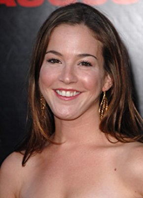

#9283 Kein Sex unter dieser Nummer
Alternativ: For a Good Time, Call...

 IMDB-Wertung: 6.0 / 10
IMDB-Wertung: 6.0 / 10  Metascore: 0
Metascore: 0 
Lauren und Katie beschließen mit 28 Jahren zusammenzuziehen, um sich ein prächtiges Apartment am Gramercy Park leisten zu können und das obwohl sie sich seit dem College gegenseitig eigentlich gar nicht ausstehen können. Das ungleiche Paar findet bald einen unkonventionellen Weg, um an Geld zu kommen: Sie gründen eine Telefonsex-Hotline. Während die beiden sich in eine Welt voller schmutziger Sprache, falscher Orgasmen und nicht-alltäglichen Sex-Praktiken erst hineinfinden müssen, beginnen sie sich gegenseitig erst wirklich kennenzulernen und sogar zu schätzen. Aus den ehemaligen Feinden werden durch diese skurrile Zusammenarbeit beste Freundinnen. Wenn die Stunden in der Sex-Hotline jedoch vorüber sind, finden sie sich auf dem harten Boden der Realität wieder. Und in diesem Umfeld wird die neugewonnene Beziehung der beiden auf eine harte Probe gestellt.
Jahr: 2012
Dauer: 87 Minuten
FSK: 16
Land: USA Studio: Focus FeaturesTonspuren: DTS - ,
Untertitel: Deutsch,
Auflösung: 1080p (1920x816) Größe: 4198 MB
Genre: Komödie
Regisseur: Jamie Travis
Drehbuch: Katie Anne Naylon
Soundtrack: John Swihart
Darsteller:
- Lauren Miller Rogen als Lauren Powell
- James Wolk als Charlie
- Ari Graynor als Katie Steele
 Justin Long als Jesse
Justin Long als Jesse- Lawrence Mandley als Henry
- Josh Ruben als Lamp Guy
- Steven Shaw als Morty
 Mimi Rogers als Adele Powell
Mimi Rogers als Adele Powell Don McManus als Scott Powell
Don McManus als Scott Powell Mark Webber als Sean
Mark Webber als Sean Nia Vardalos als Rachel Rodman
Nia Vardalos als Rachel Rodman Kevin Smith als Cabbie
Kevin Smith als Cabbie Sugar Lyn Beard als Krissy
Sugar Lyn Beard als Krissy Seth Rogen als Jerry
Seth Rogen als Jerry Ken Marino als Harold
Ken Marino als Harold-  Martha MacIsaac als Inmate
- Vanessa Britting als Claire (uncredited)
- Veronika Dash als Bridgette (uncredited)
- Jennie Floyd als Lesbian Prisoner (uncredited)
- Sherilyn Henderson als Manhattan Pedestrian (uncredited)
 David Kallaway als Craigslist Mover (uncredited)
David Kallaway als Craigslist Mover (uncredited)- Amanda Marlon als Hipster Bar Patron (uncredited)
- Michael Medico als James Weaver (uncredited)
- Krystina Ptasinski als Laxton Press Intern (uncredited)
- Eddie Geller als Drunk Guy
- The Legend of Zelda Miller-Rogen als Zelda
- Kimberly Cossette als Pole Dancing Instructor (uncredited)
- Amy Jo Steele als Carrie Weaver (uncredited)
- Paula Vanessa als Lola (uncredited)
Datei: X:\2012(G-M)\Kein Sex unter dieser Nummer (2012, FSK16, 1920x816).mkv seit 20.07.2018
Festplatte: HD 2012(A-M)
 Es gibt insgesamt 112 Filme in der Gruppe '2012(G-M)'
Es gibt insgesamt 112 Filme in der Gruppe '2012(G-M)'